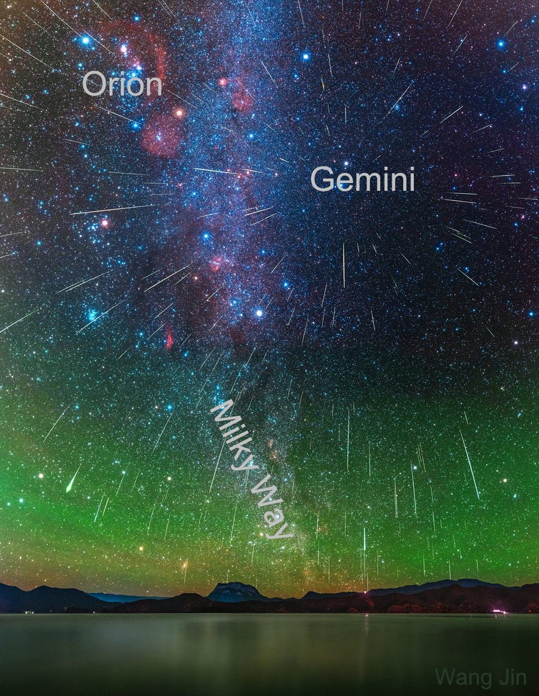

说明：这些流星是从哪里来的？就天空中的方向而言，明确的答案是双子座（Gemini）。这就是为什么这场12月的主要流星雨被称为双子座流星雨——因为流星雨似乎都来自位于双子座的辐射点。然而，从三维角度看，从不同寻常的3200号小行星法厄同（3200
Phaethon）喷出的沙粒大小的碎片沿着一条围绕太阳的明确轨道运行，接近地球的轨道部分正好位于双子座前面。因此，当地球穿过这一轨道时，碎片坠落下来，其辐射点出现在双子座。这张特色图片是2020年双子座流星雨期间拍摄的许多照片的合成图，显示了12月14日夜间200多颗明亮的流星划过天空的情景。而11月最好的流星雨是狮子座流星雨，将在今晚和明天（译注：对北京时间而言是明晚）达到极大。不幸的是，今年，当狮子座流星雨在凌晨达到较高的流量时，被一轮明亮凸月照亮的天空会淹没掉较暗的流星。尽管如此，每小时应该仍然可以看到几颗较亮的狮子雨的流星。